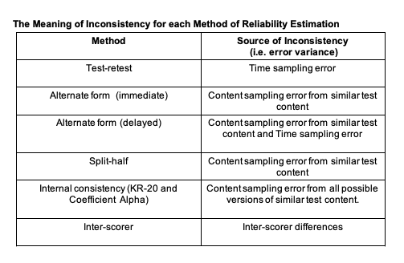
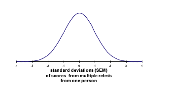
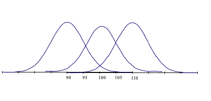

Chapter 4 The Reliability of Measurement
Tests typically contain many items for measuring a construct. As has previously been mentioned, these items are a sampling of relevant questions/items from the much greater number of items that potentially could be used to measure the construct. A number of important questions arise from this: how many items should be included in the test, how diverse should they be, and how can we tell if they have a common core? These questions, as we shall see, are about building a test that gives consistent or reliable measurement. Reliability enables meaningful measurement. Furthermore, even if we can answer these questions, how can we know if the test is any good for its intended use, that is, whether the test is measuring something meaningful and useful? This is a matter of establishing the validity of measurement.
4.1 Reliability
Firstly, to address how many items should be included on a test and how diverse should they be. Take, for example, a test intended to measure mathematical reasoning. If the test is to measure reasoning then its items should involve reasoning or ‘figuring things out’, and for a test of mathematical reasoning the item content should have a mathematical content or relevance. So far, this is obvious, but there are a many sorts of problems that involve reasoning. These may include:
Figuring out analogies such as:
60 is to 20 as 120 is to?
Figuring out the odd term such as:
362, 144, 313, 242
Figuring out the sequence such as:
7, 10, 16, 28…
Thus, there are very many ways in which to present a reasoning problem, and within each way there are many different mathematical operations that could be included (e.g. just addition, just subtraction, just division, just multiplication or any combination of these operations). Why not just take one way of presenting the problem and one kind a mathematical operation, perhaps using just a few items on the test? This would be a very poor measure because:
4.1.1 Few items will not represent the whole domain of the construct
For example, consider a test of mathematical reasoning that just included items of sequences involving multiplication. Unless, for everybody, this type of content is very highly correlated with other ways of mathematical reasoning, we will not have measured all that we mean by mathematical reasoning. Thus we should include items from the whole range of possible item content so as to represent the breadth of the construct we intend to measure; the broader the construct the more items we will need.
4.1.2 Difficulty levels cannot be properly varied with few items and so cannot reveal a range a difference between people.
Thus, the more items there are on a test and the more varied these are in difficulty, then the more potentially discriminating the test will be.
Furthermore, any single item is likely to be a poor measure because of the various sources of random error that can affect performance on one item. Such sources include:
4.1.3 Any one item may be poorly constructed
Any specific item may be a poor measure because it is badly constructed. For example, it may be just too easy or difficult or it may include irrelevant content. Thus, the more items there are on a test, the less influence there will be from one or two poor items.
4.1.4 Any one item may offer advantage or disadvantage to the test taker because of their previous experience
For any specific item, an individual may advantaged or disadvantaged by their previous level of familiarity with just this type of reasoning, and/or just this type of content. The item may, for example, just hit a ‘blind spot’. Thus, the more diverse the items are, the more likely it is that such influences will balance out.
4.1.5 Any one item may be affected by very temporary events
When attempting to answer any single item the person may be affected by external distractions (e.g. noise, the person next to them, etc) or internal distractions (e.g. suddenly wondering if they left the iron on). Lucky guesses could also be placed in this category. Thus the longer the test the less influence very temporary events will have on the total test score.
To give reliable or consistent measurement, a test thus generally needs many diverse items to measure a construct so as to balance out the various sources of random error outlined above.
4.2 Reliability and Classical Test Theory
The above discussion of the need for many diverse items is reflected in Classical Test Theory. This states that the response to any item within a test can be thought of as being made up of two contributing influences: the response is partly due to the person’s true ability or personality (or whatever construct is being measured) and partly due to the various sources of random error outlined previously. That is:
\(Item Score (X) = True Score + Random Error\)
If this is the case, then by adding together lots of item scores the random error will increasingly cancel itself out and the total score across the items will increasingly reflect a person’s true score. That is:
Total Score across Items (X) = True Score (and more true score than at an item level) + Random Error (and less random error than at an item level)
The True score (T) is the score the person would obtain if they were tested using all of the possible items from the relevant construct domain. As such it is a hypothetical score.
Clearly, to be representative, broad constructs will need more items than narrow constructs. Furthermore, because this usually involves sampling many items, any random errors within individual items are likely to balance out over the whole collection of items within the test. However, this diversity of item content will only increase accuracy of construct measurement if the items falls within the construct domain (e.g. mathematical reasoning), that is, if there is a common core to the items.
4.2.1 Determining the Reliability Coefficients
In general then, the more items a test contains, the more reliable will be the measurement i.e. the less error there will be. However, good items are not easy to write, and of course the practical use of the test means that they should not take too long to complete. Kline (1993) claims that a 10 item test can give quite consistent measurement, and a 20 item test can give very satisfactory reliability. These are very much rough guides, to know with any confidence we should determine the reliability of the test, and for this we need to calculate a reliability coefficient. Classical reliability theory shows that a test’s reliability is equal to the average inter-correlation of all possible same length tests that sample the same item content. This average inter-correlation gives the reliability coefficient (\(r_{xx}\)) for the test.
Perhaps the ideal way of calculating a reliability coefficient would be:
• To construct many parallel versions of a test (i.e. many same length tests that each sample items from the same construct domain) • Have a very large group of people (i.e. a norm group) take each parallel version, for example everyone takes one version of the test every week for a month • Correlate the norm group test scores between every test and calculate an average correlation coefficient between the tests Such an average correlation coefficient would give a very useful index of the extent to which test scores change due to item sampling (item sampling error) and due to time of testing (time sampling error)
The reliability coefficient can be thought of as representing the proportion of true score variance (\(\sigma^2t\)) to observed score variance (\(\sigma^{2}x\)).
Thus, if we have a reliability coefficient of 0.8 then 0.8 or 80% of the tests variance is attributable to true score variance and 20% is due to random error.
Thus the greater the reliability coefficient then the more the scores on a test will reflect ‘true’ scores, and the more consistent will be the measurement. Calculating the reliability coefficient would involve inter-correlating the scores from all possible same length tests from the relevant construct domain. In practice, reliability coefficients are estimated from the inter-correlation of some of the tests from the relevant construct domain. These practical methods are listed below:
- Test-Retest methods
- Alternate Form methods
- Split-half methods
- Internal Consistency methods
- Scorer Reliability methods
Each of these methods gives information on the reliability of measurement, although what is meant by the term consistency is rather different in each case.
4.2.2 Test-Retest Methods
On two occasions, give the test to a large sample (n > 100) of people for whom the test is intended; score the test for the two occasions, then correlate the two sets of scores. If the sample has very similar test scores on the two occasions, the correlation coefficient will be high, and there is evidence for consistency of measurement over time. This method has the advantage of being conceptually simple, but there are some difficulties, for example:
4.2.2.1 How long a gap between test and re-test?
If it is too short the respondents may just remember their previous responses. Kline (1993) recommends a gap of at least three months between retests. If, however, it is too long, respondents may actually have changed with regard to the construct being measured. This is especially likely to be the case for children rather than older people. Anastasi (1997) suggests that, for any group of respondents, the interval between retests should rarely exceed six months. In all cases the test manual should state the interval used.
4.2.3 Alternate Form Methods (Parallel form methods)
Here, it is necessary to construct different versions of the same test (i.e. tests the have same content domain, same mean and same variance). Then, on two occasions, give different versions of the same test to a large sample (n > 100) of people for whom the test is intended, and then correlate the two sets of scores.
This method avoids the difficulty of people simply remembering their previous responses, and there can therefore be small time gaps between administrations. It is, however, difficult and expensive to properly construct alternate forms, and there are few available. Also, there still may be a problem with general practice or sensitising effects. This would not be a problem if everybody “benefits” to the same extent (such systematic bias will not affect the correlation), however it is more usual for some people to benefit more than others.
4.2.4 Split-half Methods
Here, the correlation is between two halves of one test. This has the advantage of only needing one testing session and only one test. However, there is the problem of how to split the test in two for purposes of correlation. Furthermore, the obtained correlation is for a test that is half as long as the actual test, and as such will be an underestimation of the reliability of the test. The Spearman-Brown formula may be used to correct for this underestimation:
\(r_{est} = \frac{2r_{ob}}{1+r_{ob}}\)
Where:
\(r_{est} =\) estimated correlation of full test
\(r_{ob}\) = obtained correlation from the split half
The above formula is actually an application of the more general formula for estimating the effect of lengthening a test
\(\frac{r’=n r_{xx}}{1+(n-1 r_{xx})}\)
Where:
\(r’\) = estimated reliability of changed test n = factor by which the test length is increased \(r_{xx}\) = reliability of the original test
4.2.5 Internal Consistency Methods
These methods estimate the reliability of the test from the number of items in the test and the average inter-correlation among the items. Such internal consistency estimates can be shown to be equivalent to the mean of all possible corrected split-halves for a test of a given length. This means that internal consistency methods give the average correlation between all possible same length versions of the test content. As such, internal consistency methods are considered to be the best estimate of the theoretical correlation between all possible pairs of tests in the domain, however such methods do not take account of error due to time of testing (i.e. time sampling error).
The formulas for calculating internal consistency take into account the number of items on the test (i.e. length of the test); because the more items there are on a test then the more likely it is to balance out the influence of random error. However, this will only be the case if the items actually share a common core and therefore the formulas also take into account the extent to which there is some consistency of responses between the items by using the average inter-item correlation.
Coefficient alpha is used for calculating internal consistency when items have more than two response options (e.g. personality scales)
\[ r_{xx} = \frac{n \times r_{averagejj}}{1+ (n-1) r_{averagejj}} \]
Where: \(r_{xx}\) = reliability of the test (internal consistency)
n = number of items on test
\(r_{average}jj\) = average inter-correlation of the test items
The more conventional way of calculating coefficient alpha (which also takes account of any differences in standard deviations across items) is shown below:
\(r_{xx} = \frac{n}{n-1} (1-\frac{\Sigma sd^2_i}{sd^2x_i})\)
Where: \(r_{xx}\) = coefficient alpha n = number of items on the test \(∑sd2i\) = the sum of the item variances \(sd2x\) = the variance of scores on the total test
Kuder-Richardson formula 20 (KR-20) is used when items are scored 0 or 1 (e.g. right or wrong):
\(r_{xx} = \frac{n}{n-1}\times\frac{1-\Sigma p_q}{sd^2_x)}\)
Where:
\(r_{xx}\) = KR-20
n = number of items on the test
p = proportion of test takers getting each item right
q = proportion of test takers getting each item wrong
\(sd^2_x\) = the variance of scores on the total test
An important implication of these formulas, is that for two tests of the same length, the more reliable test must have greater variation in the scores across test takers and so be more discriminating between respondents.
As a general rule, internal consistency coefficients should not drop below 0.7, and ideally be around 0.9 or even higher if used to make important decisions about individuals.

4.2.6 Reliability and the Effect of Combining Scores from Separate Tests
The higher the correlation between two tests or scales, then the higher will be the reliability of two scores combined from these scales. Thus composite scores are typically more reliable than the individual tests, and their reliability can be calculated from the correlation between the tests and the average test reliability.
Furthermore, the higher the correlation between two scales then the lower will be the reliability of the difference score. Difference scores reflect differences in true scores and differences due to measurement error. With highly correlated scales there will be little difference in the true scores (since both are measuring the same construct), thus any difference between two scale scores is likely to be due to measurement error. The reliability of difference scores can be calculated from the reliability of the two tests and their correlation.
4.3 Assumptions of Internal Consistency Methods
In the same way that we need to check assumptions when running statistical analyses on our data, we also need to check assumptions when establishing the internal consistency of our measures. Whilst Cronbach’s Alpha is not the most conservative of measures of internal consistency, it is still more restrictive than we might like. There are three reliability models, each with progressively fewer restrictions.
4.3.1 Unidimensionality
First and foremost, any time we use a measure, we need to ensure that it is Uni-dimensional, that is only measuring a single factor, rather than a series of subscales. This is obvious when thinking about tests - we would not purposefully include verbal intelligence items in a spatial reasoning task - but less so when considering inventories such as Portrait-Values or Personality measures where questions might be ambiguous, or relate to many different constructs. In this regard it is always important to check for dimensionality when using inventory measures. Common ways to do this are exploratory factor analysis and parallel analysis.
4.3.2 Reliability Models
Unidimensionality is common to all reliability models. If a measure is formed of subscales, then these ought to be checked separately. After Unidimensionality has been established, the model that is selected will depend on the structure of the factor and the features of the items.
4.3.2.1 Parallel
Parallel reliability models are the most restrictive. They assume that not only do items have the same covariances, i.e. they relate to each other in the same way, but also that they have the same variance. We saw earlier that parallel forms reliability requires sets of items that are ostensibly identical in all but wording, and this is what that would look like. This is perhaps easier to achieve when making tests: 1 + 2, and 2 + 1 are parallel in that they have the same elements, the same answer, but are just rearranged. When making inventories however, it is much more difficult: can we really say that two items are identical if they mention different objects? Take for instance ‘I generally vote for liberal candidates’ and ‘I generally vote for conservative candidates’ - to say these are parallel would imply that the correlation between them was about -1, i.e. a person who scores 1 on the former will always score 5 on the latter - but that is unlikely since there will be variation in how people interpret the words conservative or liberal. These may have asymmetric meanings - a conservative might vote for a left leaning candidate under some circumstances, whereas a liberal voter might never vote for a conservative regardless of the alternative.
4.3.2.2 Tau/ Esesentially Tau Equivalent
Tau equivalnce allows the variances of items to change, but assumes that the covariances remain the same - that is, were the population to be sampled, the covariances between items would be identical (so sample covariances should be similar, give or take sampling error). This is perhaps a little too much to ask, and so Essential Tau equivalence, where each item is assumed to have a common true score, is used instead.
4.3.2.3 Congeneric
Congeneric reliability is the least restrictive model of reliability. It literaly means ‘of the same genus’, so rather than only measuring lions, one could also measure attitudes towards tigers, cheetahs, and Bobcats too. Congeneric reliability allows both variances and covariances of items to vary. They still need to be correlated with the same factor, but the strength of correlation is free to vary.
4.4 Generalisability Theory
Classical reliability theory considers inconsistencies in test scores to be random error, and the different sources of random error are identified by the various methods for establishing reliability. In contrast, generalisability theory attempts to identify specific and systematic sources of inconsistency (e.g. using a test for selection compared to using the same test for career development). Here the concern is with the extent to which test scores from one situation are generalisable to scores in other situations. Within generalisability theory, whether a test is reliable depends upon the conditions of measurement and the intended use of the test scores
For example, if we wish to generalise a test score to how people perform under pressure then testing people with harsh supervisors is not a source of random error.
4.5 Using Reliability coefficients to Calculate Confidence Intervals
As discussed previously, classical test theory states that any measurement can be thought of as being made up of two parts: the person’s true score for that attribute and some error component. The True score (T) is the score the person would obtain if they were tested using all of the possible items from the relevant content domain (i.e. no content sampling error). As such it is a hypothetical score.
In this theory all important errors in measurement are considered to be random and normally distributed. Thus if a person were to be given a subset of test items repeatedly, and if we were able to achieve no carry-over effects from one test session to the next, then we would expect a distribution of obtained scores the mean of which would approximate the person’s true score. This is obviously a hypothetical situation.

Clearly, the more random error associated with a particular test then the greater will be the variance (and standard deviation) of this hypothetical distribution. Although it is impossible to actually repeatedly test an individual in such a way, the standard deviation of this hypothetical distribution can be estimated from knowledge of the reliability coefficient for the test and the standard deviation of obtained scores for a population of test takers (i.e. the norm group). This estimate of the standard deviation for the above distribution is termed the Standard Error of Measurement (SEM).
4.6 Calculating the Standard Error of Measurement (SEM)
The SEM may be calculated as follows:
\[\large SEM = SD\sqrt{1-r_{xx})}\]
Where: SD is the standard deviation for the test scores obtained by the norm group (or the SD of transformed scores e.g. T scores) and \(r_{xx}\) is the reliability coefficient for this same group.
The SEM is a useful statistic because it allows us to put concrete confidence bands around any observed score. For example, if the obtained ability raw score of a person is, for example, 100, and the SEM for these raw scores was 5, then we could be 95% confident that his or her true score on this test is likely to fall within 9.8 (i.e. 1.96 x 5) points of this obtained score i.e. the person’s true score is likely to be between 90.2 and 109.8 (i.e. 100 - 9.8 to 100 + 9.8).
The logic here is as follows: if, as discussed above, 95% of observed scores will fall within about 2 SEM (1.96 SEM to be precise) of the true score, then 2 SEM around any given observed score will contain the true score on 95% of occasions. The figure below illustrates a case where the test SEM is 5 points and there is an observed score of 100. The score of 100 is obviously within the 95% confidence band for a true score of 100, but it is also within the 95% confidence band for a true score of 90 and for a true score of 110. Thus an observed score of 100 may come from a true score anywhere between 90 and 110, and this will be the case on 95% of occasions. When using the Standard error of measurement we are constructing confidence bands on the basis of the likely test score range for any given true score.

In the last example, a 95% confidence band was calculated. By using normal distribution curve (NDC) tables it is possible to calculate any level of confidence band for a given score.
Norm tables within test manuals often give 68% confidence bands for any obtained score (i.e. 1 SEM around the observed score). .
4.6.0.1 Calculating the Standard Error of Difference (SEdiff)
As well as placing confidence bands around individual scores, reliability coefficients may also be used to assess confidence about differences in test score. For example, if a person scores differently on two tests, how confident can we be that this is a real difference in performance rather than just measurement error associated with both tests? A similar question is: if two people score differently on the same test, how confident can we be that they actually do differ in underlying ability rather than this being the result of error within the test? To answer these questions we can use the Standard error of Difference (SEdiff) as follows:
\[ \large SEdiff = \sqrt{(SEM^2_{test1} + SEM^2_{test2})} \]
The standard error of difference can be seen as the standard deviation of the distribution of differences scores, and involves the SEM of both tests. These two tests could either be the same test on two different people (in which case the SEM above will be the same on both tests) or it could be two different tests on the same person (in which case the SEM above will be different for test 1 compared to test 2). In either case, the application of the above formula requires that test 1 and 2 are using a comparable measurement scale i.e. the tests have the same mean and standard deviation. This means that the above formula may be rewritten as shown below:
\[ \large SEdiff = sd\sqrt{(2 – r_{xxtest1} - r_{xxtest2}}\]
If we were comparing performance on two different tests we must use one of the standardised scoring systems. If we used the T scoring system, this would give both tests a standard deviation of 10. Then if, for example, test 1 has a reliability of 0.75 and test 2 has a reliability of 0.85, then the SEdiff may be calculated as follows:
\(SEdiff = 10\sqrt{(2 - 0.75 - 0.85)}\) \(= 10 \times 0.63\) \(= 6.3\)
Thus, since the SEdiff is a unit of standard deviation, we can be 68% confident that if the two test scores differ by as much as 6 T score points (some rounding is need here) then there is a reliable difference in test score performance. If the two scores differ by as much as 12 T score points (i.e. 1.96 x SEdiff) then we can be 95% confident that there is a reliable difference in performance.
When comparing people on the same test we could use the raw score standard deviation in the calculation of the SEdiff or we could use one of the standardised scoring systems as above (e.g. T scores), In fact, when the same test is involved the SEdiff formula reduces to that shown below:
\(SEdiff = \sqrt{(2)} \times SEM\)
\(SEdiff = 1.414 \times SEM\)
If, for example, we were using T scores as the basis for comparison and the test had a reliability of 0.8 (a fairly typical level) then the SEdiff would be:
\(SEdiff = 1.414 \times (10\sqrt{1-0.8})\) \(= 1.414 \times 4.47\) \(= 6.3\)
The interpretation of the above statistic is the same as the previous example.
4.7 Indicative Reading
Charter, R.A. (1997). Confidence Interval Procedures for Retest, Alternate-Forms, Validity and Alpha Coefficients. Perceptual and Motor Skills, 84, 1488-1490.
Charter, R.A. & Feldt, L.S. (2000). The Relationship Between Two Methods of Evaluating an Examinee’s Difference Scores. Journal of Psychoeducational Assessment, 18, 125-142.
Charter, R.A. & Feldt, L.S. (2001). Confidence Intervals for True Scores: Is there a Correct Approach. Journal of Psychoeducational Assessment, 19, 350-364.
Charter, R.A. & Feldt, L.S. (2002). The Importance of Reliability as it Relates to True Score Confidence Intervals. Measurement and Evaluation in Counselling and Development, 35, 104-112.
Charter, R.A. & Feldt, L.S. (2009). A Comprehensive Approach to the Interpretation of Difference Scores. Applied Neuropsychology, 16, 23-30.
Charter, R.A. (2009). Differences Scores: Regression-Based Reliable Difference and the Regression-Based Confidence Interval. Journal of Clinical Psychology, 65(4), 456-460.
Cho, E. (2016). Making Reliability Reliable: A Systematic Approach to Reliability Coefficients. Organizational Research Methods, 19(4), 651–682. https://doi.org/10.1177/1094428116656239
Dudek, F.J. (1979). The Continuing Misrepresentation of the Standard Error of Measurement. Psychological Bulletin, 86, 335-337.
Glutting, J.J., McDermott, P.A., & Stanley, J.C. (1987). Resolving Differences among Methods of Establishing Confidence Limits for Test Scores. Educational and Psychological Measurement, 47, 607-614.
Helms, J.E., Henze, K.T., Sass, T.L., Mifsud, V.A. (2006). Treating Cronbach’s Alpha Reliability as Data in Counseling Research. The Counseling Psychologist, 34, 630-660.
Harvill, L. M. (1991). Standard Error of Measurement. Educational Measurement: Issues and Practice, 10, 33–41. doi:10.1111/j.1745-3992.1991.tb00195.x Standard Error of Measurement - NCME Within the above link: you have used equation 6 in the article for the SEM within your data record sheets, and equation 10 for the SEdiff within your data record sheets (though article calls this the SEM for the score differences)
Mortensen, E. L., & Gade, A. (1992). Linear versus normalized T scores as standardized neuropsychological test scores. Scandinavian Journal of Psychology, 33(3), 230–237.
Tavakol, M., & Dennick, R. (2011). Making sense of Cronbach’s alpha. International Journal of Medical Education, 2, 53–55.